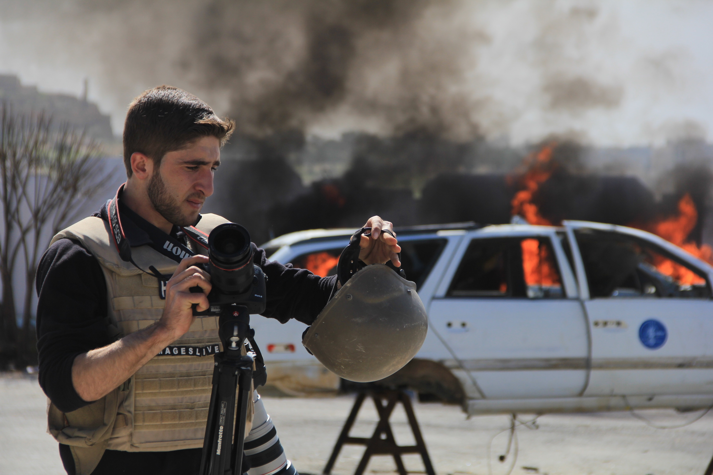
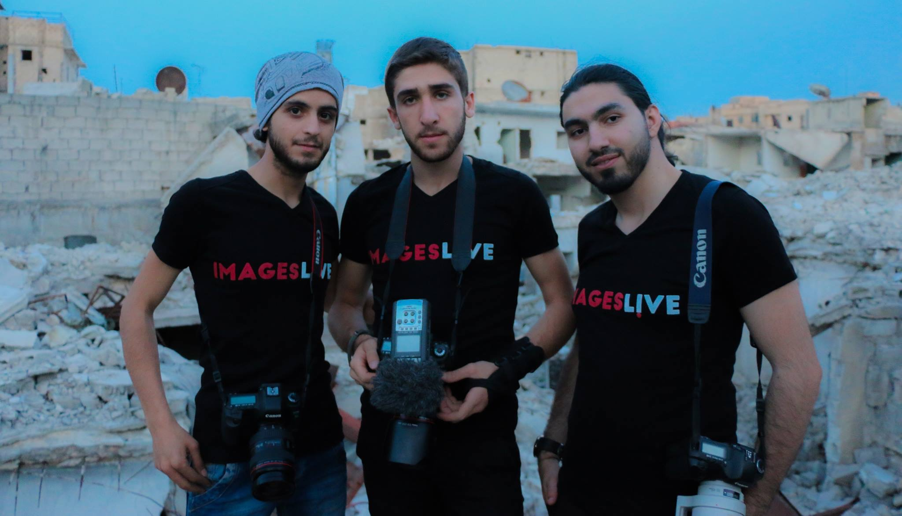

<div class="page page-id-615 page-template-default">
	<article id="post-615" class="post-615 page type-page status-publish has-post-thumbnail hentry">
		
		<header class="entry-header">
			
			<span class=span1><h1 class="page-title" >Osama Jumaa – Syrian Journalist</h1></span>			
		</header><!-- .entry-header -->
<p align="center"><iframe width="640" height="360" src="https://www.youtube.com/embed/vT5luXiQc_k" frameborder="0" allow="autoplay; encrypted-media" allowfullscreen></iframe></p>
		<div class="entry-content clearfix">
			<p></p>
<p>On June 5th 2016 Osama Jumaa was killed after being hit by artillery fire launched by the Syrian government in the district of Al-Mashad in Aleppo. Osama had gone to that neighborhood to film the rescue of people trapped under the rubble following the bombardments. As soon as the ambulance in which Osama was travelling reached the site, the vehicle was hit by artillery fire and Osama was injured. As the driver and paramedic, Abdul Aziz Sharha, attempted to rescue Osama, they were both hit by artillery fire and both Osama and the driver lost their lives. Osama was an extremely brave, independent, impartial young journalist with deep integrity and great humanity.</p>
<p></p>
<p>Osama was twenty years old when he lost his life. Osama was born in Aleppo, Syria, although his family soon left Aleppo to live in the village of Taqd, west of Aleppo. His father was a school teacher before the Syria crisis. <a href="http://www.photosmedia.net/medyan-dairieh/">Medyan Dairieh</a> had known Osama’s family since the inception of the Syrian revolution and was hosted by them often for long periods whenever he went to Syria to cover the situation there. Osama’s entire family has always been extremely hospitable and kind to Medyan.</p>
<p></p>
<p>Osama had always shown a great interest and passion in Medyan’s cameras, and since he was quite young Osama had expressed to Medyan his desire to learn how to use them. While Medyan was staying with his family, Osama began gaining the first basic understanding of photography.</p>

<!-- <p></p> -->
<p ><iframe style="float: left;margin: 5px 15px 15px 5px" width="370" height="300" src="https://www.youtube.com/embed/9a3Qn2dB8xI" frameborder="0" allow="autoplay; encrypted-media" allowfullscreen></iframe></p>
<p>
Osama trained in Turkey in journalism, photography, as well as in the production of documentaries with Images Live. Osama was also trained on the ground in Syria by Medyan Dairieh. The teaching had focused greatly on the necessity of impartiality, independence, and integrity of the journalist in reporting the news. It also emphasized the duty of journalists to show all the parties involved in the conflict, while at the same time to remain objective and not to embrace any particular view. Osama had absorbed with extreme ease these principles of journalism. </p>

<p></p>
<p>Unlike many other young Syrians during the Syrian conflict, Osama had not joined any of the warring factions nor any party or organization in Syria, thus maintaining an unbiased approach to the conflict that was reflected in his impartiality and great professionalism as a journalist. Osama’s dream was to study photography and film making in a Turkish University and arrangements were being made for him to do so.</p>

<p></p>
<p>During his training, Osama was also instructed in depth on the issue of safety. Osama has died of serious injures to his head, and his abdomen. He was also injured in his leg and arm. It is unknown the reason why Osama was not wearing the helmet and body amour in the ambulance. One of Osama’s uncles insisted on retrieving Osama’s body, in spite of the extreme danger of the operation, which involved facing artillery fire and airstrikes in the al-Castello road.</p>
<p>Osama had <a href="http://www.photosmedia.net/blog/2016/06/02/breaking-news-castello-the-road-to-death-in-aleppo-syria/">reported</a> about the al-Castello road a few days before losing his life. The road had been nicknamed ‘the road to death’ due to the heavy bombardments and artillery the road had recently seen. Sadly, Osama body has now traveled through it.</p>
<style type="text/css">p {
		font-size: 20px;
	}</style>

